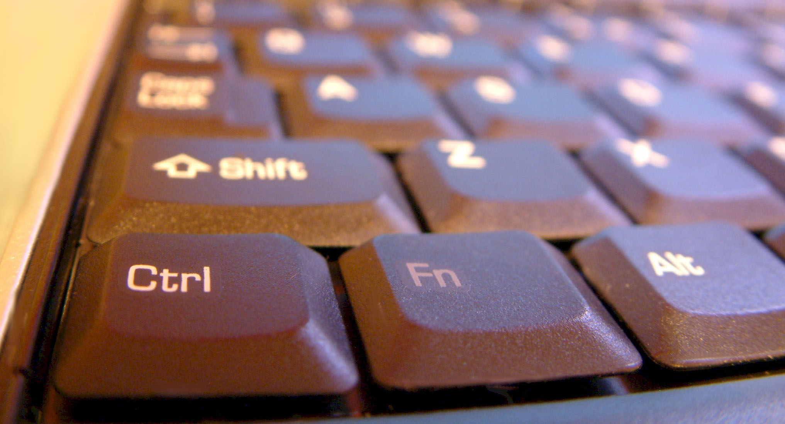
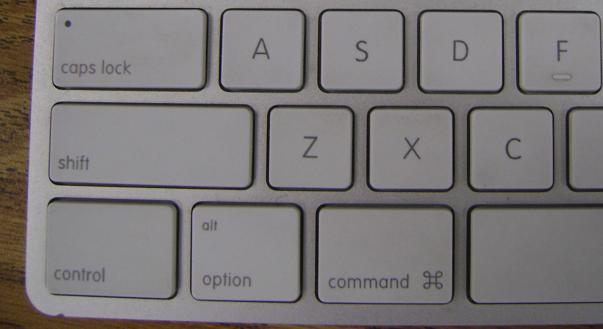
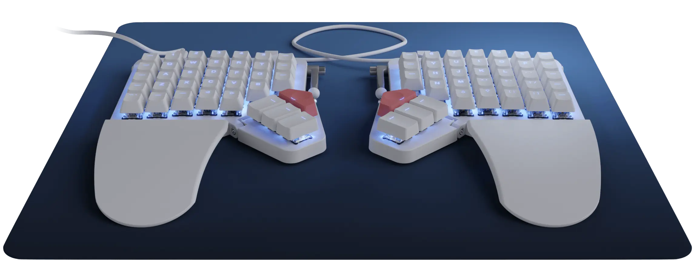
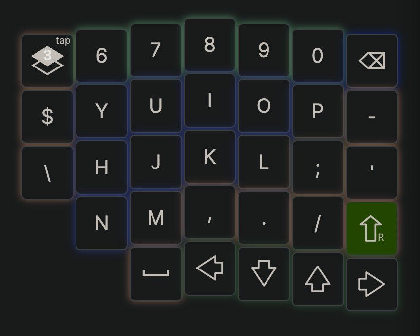
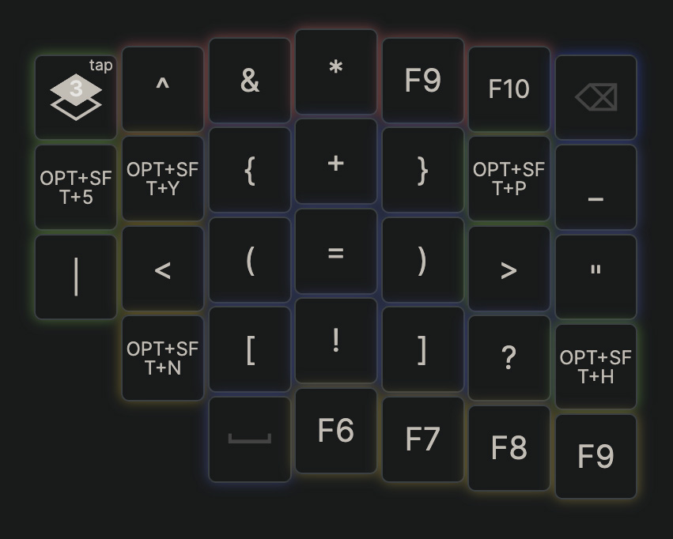

== if rss
== extends "/templates.inc/rss/default.html"
== else
== extends "/templates.inc/pages/blog.html"
== endif
== block toml
title = "Type Different: Changing the Keys on Your Keyboard"
created = 2026-06-21T12:22:00-04:00
status = "done"
id = "ab/vd/qd/5i"
== endblock
== block main
== filter md
## Keyboard Basics
There's a few things to know about
keyboards you plug into your computer:
1. They have little computers
in them.
2. When you press a key, the little
computer in the keyboard sends a
signal to your actual computer telling
it what key you pressed.
3. The little computer in your keyboard
is programmed with a map that defines
which keys send what signals to your computer
(i.e. when you press the "a" it sends
and "a" signal).
4. Some keyboards let you reprogram
the map to change the signals
each key sends (e.g. you can set it
up so the "a" key sends the "z" signal).
(Keyboards built into laptops work
the same way. It's just a little easier
to think about them as separate things
for this post.)
## Good Defaults
Each keyboard come with a default map
that defines the signal each
physical key sends to your computer.
That map is what lets different keyboards
lay out keys in different ways. For example, the
"Alt" key on this keyboard is the
third one from the left.

On this one, (where it's labeled both "alt" and "option")
it's the second from the left.

Thanks to the maps, the computer
receives the same "Alt" signal regardless
of where the key sits on the keyboard.
## Change-Up
You can change things around if you're
keyboard has a way to reprogram the mapping.
For example, you could reverse the letters of the alphabet.
So, pressing an "a" sends the signal for a "z", "b" does "y", etc...
Probably a bad idea, but totally possible.
A more practical example is moving frequently used keys
so they are easier to reach. As an example,
I use parenthesis all the time when I'm programming.
By default, the "(" and ")" keys are mapped so you
have to reach up to the number row and
hold shift to type them.
I updated the map on my keyboard so it sends
the signal for "(" when I hit the "j" key
while holding down the "control" (aka "Ctrl") key.
The "l" key does the ")".
## Landing Changes
I use a keyboard called a Moonlander. It looks
like this:

Here's how the keys are mapped for the right half:

When I press the "control" key, they switch to this:

That's how I get the parenthesis under "j" and "l".
The keys are mapped specifically to reduce
how far I have to reach when programming.
The goal is to reduce the risk of repetitive
strain injury (RSI) issues.
## The Rabbit Hole
In theory, you can update the mapping
layout on any keyboard. In practice,
that's not the case. You can only
do it if the manufacturer provides
an app that let you do it1.
Lots of "mechanical keyboards" provide
that software. Start looking into those
if you want to change things up.
Fair warning though, there are a billion
options and even more opinions.
Totally worth it, though.
-a
end of line
### Endnotes
- I glossed over some of the complexities
of how keyboards work. For example,
the signal that's sent when you press a
specific key is a code instead of
an actual character.
- It's also possible to update some
computers so they do different things
when they receive given signals. For example,
you press the "a" key and your keyboard
sends the "a" signal, but the computer
acts like it received a "z" signal
and types that. It's been a while
since I've looked into that. Last
time I did, the options weren't great.
- The full keyboard layout mapping
for my moonlander is
[on this page](https://configure.zsa.io/moonlander/layouts/APODe/latest/0).
### Footnotes
- 1 you can also get into hardware hacking, but
that's a different thing entirely.
### Image Sources
- [keyboard 1](https://www.flickr.com/photos/ozzzie/37044873/in/photolist-4gS9H-37iJVd-3w9mE-26jA6Jk-6bitL-uE7wS-MLHsd-gsxYB-569niC-oqisgw-9VfpC-b1qMG-bGGgo-4WrmRD-Lrcg5R-4myiwF-9BVHmk-xAMYw-6sHJFL-5tSaJe-5tWxV3-cRGCnh-7dcFo-kZo7LT-cRGCD1-cRJxT1-8jqLdc-kZpw1q-b1qNV-c55zTU-7bNZYS-bFxRCV-b1qEA-7FSUUK-b1qXQ-7edja8-J3igiF-8jbB6-d8auR5-obNw2V-JY2ip-b1qYP-8oZRpA-L9DJUs-avL4Y-BYwmWW-7FWR7U-a7yGeX-jKTfVv-4nMqXb)
- [keyboard 2](https://www.flickr.com/photos/njtechteacher/4389417539/in/photolist-b1qNV-c55zTU-7bNZYS-bFxRCV-b1qEA-7FSUUK-b1qXQ-7edja8-J3igiF-8jbB6-d8auR5-obNw2V-JY2ip-b1qYP-8oZRpA-L9DJUs-avL4Y-BYwmWW-7FWR7U-a7yGeX-jKTfVv-4nMqXb-e9Kru-vezru-7vqNu2-3eYMc3-HdeRa-knMJ6Z-4GBua3-KysRnh-8j4dT1-9kUmhm-9JfDUW-4QvoK8-6QXd7-7r56jn-aNXewX-cyoJC-c55ztQ-5Ba1U-qC8NDY-9U4Zua-SpyDDs-6YJ7Mv-7DMSG1-66ygcE-4tXpkE-9a378S-TVfw-8TuUUz)
- [moonlander](https://www.zsa.io/moonlander)
== endfilter
== endblock